地政学
アスワンはエジプト南端のナイル回廊にあり、スーダン、紅海、砂漠路、ダムを意識する都市です。水と国境、遺産保護が行政の重心になり、警備、交通、観光船、発電施設、湖の管理が日常の都市運営に深く関わります。
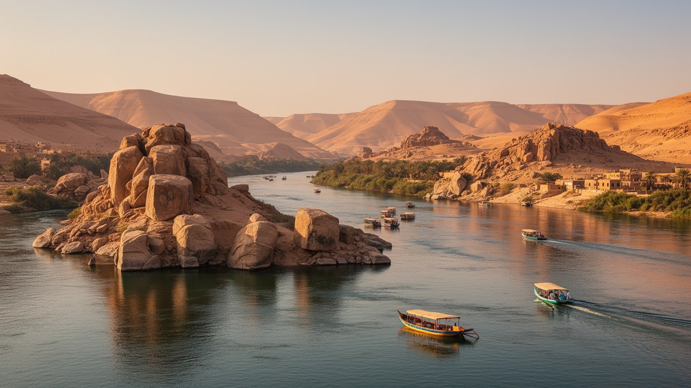
🇪🇬 エジプト / アフリカ / World City Atlas
ナイルが岩礁と島に分かれ、砂漠、ダム、ヌビア文化、古代神殿、観光船、採石場、国境感覚が重なる、エジプト南端の川辺の都市です。
都市の骨格
アスワンは巨大都市ではありませんが、エジプトの水、電力、国境、古代遺産、ヌビアの記憶を同時に背負う場所です。川の島、コルニッシュ、市場、ダムへの道、神殿の船着き場が、観光と生活を近距離で結びます。
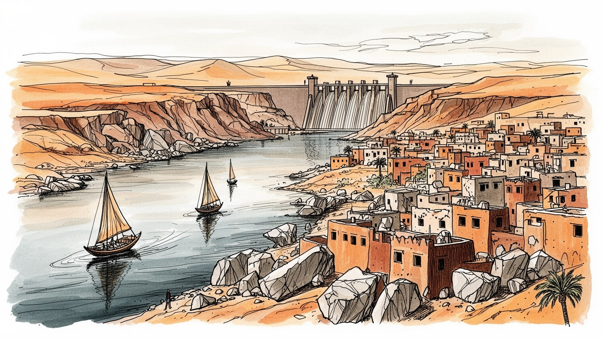
アスワンはエジプト南端のナイル回廊にあり、スーダン、紅海、砂漠路、ダムを意識する都市です。水と国境、遺産保護が行政の重心になり、警備、交通、観光船、発電施設、湖の管理が日常の都市運営に深く関わります。
水力発電、観光、農業、採石、鉄道、公共部門が雇用をつくります。季節観光、物価、若者の仕事探しが家計を揺らし、ガイド、船頭、店、畑、建設現場、露店の商いが同じ都市経済の中で結びつきます。手技も残ります。
ヌビア文化、イスラムの暦、コプトの記憶、古代神殿が同じ川辺に重なります。音楽、婚礼、食、ラマダンの夜市、家族儀礼が都市の表情を作り、湖の記憶と観光客の視線も日々の会話に入ります。声も残っています。
島とコルニッシュ、市場、フェルーカ、学校、病院、クラブ、買い物は生活の動線です。暑さ、水、住宅、観光収入の波が日常を左右し、子どもや高齢者の移動も川と道路の配置に強く影響されます。夜も続きます。
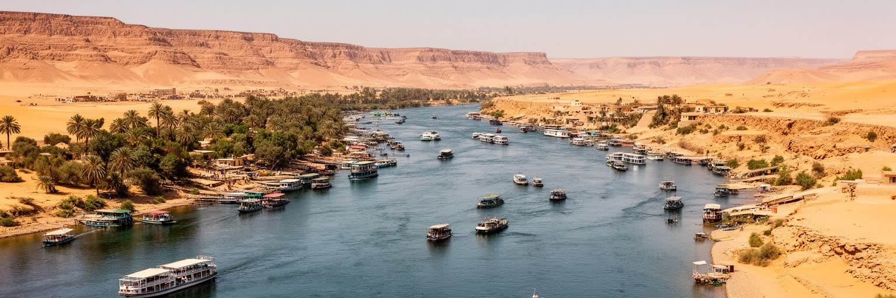
アスワンの地理は、ナイル川がエジプトの細長い生活圏を南へ押し進める場所として読むと分かりやすいです。川は岩礁と島に分かれ、東岸の市街、西岸の集落、エレファンティネ島、キッチナー島、フィラエ方面の船着き場を結び、すぐ背後には乾いた砂漠が迫るのです。カイロやルクソールから続く観光の流れはここで一度ゆるみ、スーダン方面、ナセル湖、紅海側の砂漠路、ダム施設への意識が強まるのです。都市は国境都市そのものではありませんが、南への玄関として税関、警備、交通、物流、観光管理の感覚を帯びるのです。ナイルが狭い緑の帯をつくるため、住宅、ホテル、農地、船着き場、遺跡、道路は限られた水辺を取り合うのです。川岸の美しい眺めは、同時に都市が広がる余地の少なさを示します。朝のフェルーカ、通勤の車、島へ渡る小船、観光バス、農地へ向かう人が同じ地形に集まるため、アスワンの都市生活は水面の距離と砂漠の近さに左右されます。地図上では小さな点に見えても、ここにはエジプト国家の水、南部社会、観光、古代遺産が圧縮されています。川沿いを歩くと、ナイルは背景ではなく都市の主道路に近い存在だと分かります。船が動けば観光と通学と市場が動き、水位や岸辺の整備が変われば景観だけでなく暮らしの時間も変わります。アスワンを理解する入口は、川を眺めることではなく、川が街の動線、仕事、土地の価値、記憶をどう配分しているかを見ることにあります。
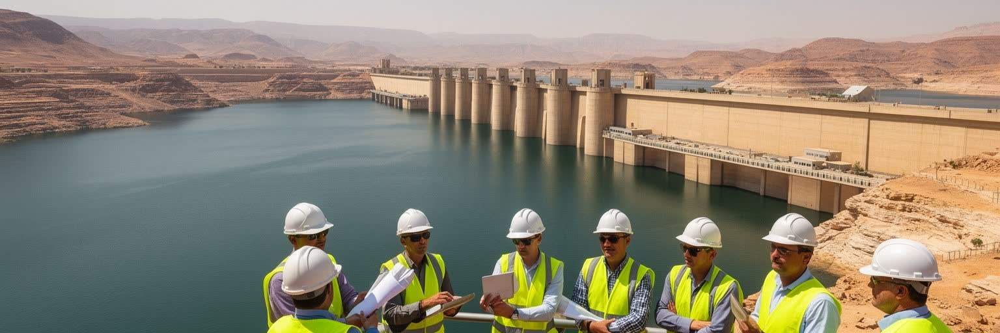
アスワンを世界史の中に置く最大の装置は、アスワン・ハイダムです。ダムは洪水調整、灌漑、水力発電、国家開発の象徴として建設され、ナイルの季節的な氾濫を制御可能な水資源へ変えました。農業、電力、工業化、都市化は大きく支えられましたが、泥の流れ、漁業、生態系、デルタの土砂供給、地下水や塩分の問題も変化しました。背後のナセル湖は巨大な貯水池であり、南部国境、漁業、観光、軍事、気候変動の議論を抱える空間です。市民にとってダムは観光名所である以前に、仕事、道路、学校教育、国家への誇り、移転の記憶を持つインフラです。水を安定させることは近代化の成功として語られますが、その安定は土地と集落の水没、ヌビア人の移住、文化財救出の大事業と引き換えでもありました。発電所で働く家族、湖で魚を扱う人、校外学習で堤体を訪れる子ども、退職後も建設の記憶を語る高齢者が、ダムを生活史として保っています。職員住宅、バス停、売店、湖畔の食堂も、巨大な国家施設を毎日の通勤と買い物に結びます。新聞やテレビが水交渉を報じると、家庭の会話にも湖の水位や電気料金が入ります。水位の管理はカイロやデルタだけでなく、上流国との関係や降雨変動にも結びつきます。堤体の存在は、観光写真に写る穏やかな水面の背後に、政治、技術、移住、環境の選択があることを示しています。
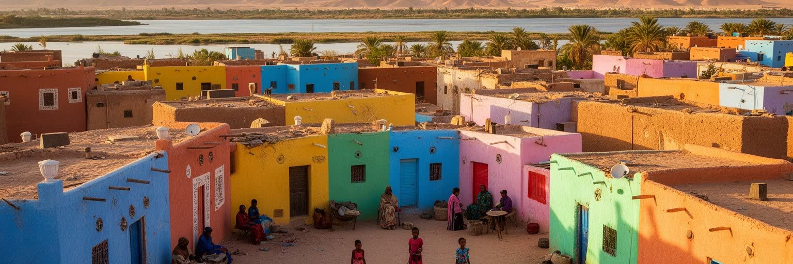
アスワンの文化を語るとき、ヌビアの記憶を脇に置くことはできません。ナイル上流域には、アラビア語だけでなくヌビア諸語の響き、色鮮やかな家、音楽、家族の語り、川と砂漠の暮らしが長く続いてきました。ハイダム建設とナセル湖の形成によって、多くのヌビア人は祖先の村を離れ、新しい集落や都市部へ移ったのです。水没した土地は地図から消えたように見えますが、家族の記憶、歌、料理、婚礼、親族関係、観光の語りの中に残り続けます。アスワンのヌビア村を訪れる体験は、色彩豊かな建物や土産物だけで消費されがちですが、その背後には移転、補償、言語の継承、若者の仕事、学校教育との関係があります。観光はヌビア文化を可視化し、収入を生む一方で、文化を分かりやすい装飾へ縮める危険もあります。都市の中でヌビア性は、民族博物館、家庭の会話、船頭の案内、結婚式の音楽、壁の模様、料理の香りとして現れます。アスワンを読むには、古代エジプトの石の遺産だけでなく、近代開発で動かされた人びとの記憶を同じ重さで扱う必要があります。湖の水面は静かですが、その下には失われた村の位置、墓、畑、船着き場の記憶が沈んでいます。ヌビア文化は過去の民俗展示ではなく、現代の教育、観光、権利、家族の移動に関わる生きた課題です。だからアスワンの明るい色彩を見るときは、楽しさと喪失の両方を読まなければなりません。
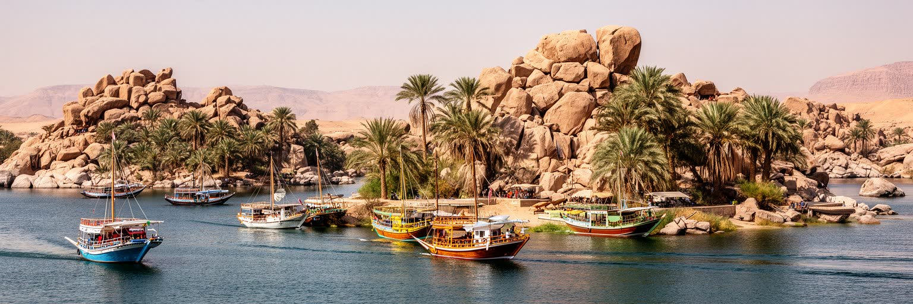
アスワンの日常は、島と小船を抜きにしては見えません。エレファンティネ島には古代の遺構、ヌビア人の集落、宿泊施設、細い道があり、対岸の市街とは短い船の移動で結ばれます。キッチナー島の植物園、アガ・ハーン廟を望む西岸、フェルーカが行き交う水面は観光の象徴ですが、船は観光客だけの乗り物ではありません。島に住む人の通学、通勤、買い物、親族訪問、医療への移動にも使われます。朝は制服の子ども、仕入れ袋を抱えた店員、病院へ向かう高齢者が船着き場で並び、夕方はサッカー帰りの若者や川風を待つ家族が岸に集まります。船頭の仕事は天候、季節、燃料費、観光客数、交渉に左右されます。川が穏やかな日には移動は美しく見えますが、暑さ、夜間の安全、料金、待ち時間、荷物の運搬は生活の現実です。岸辺では茶を売る屋台、スマートフォンで音楽を流す若者、船賃を確認する母親、観光客に絵を見せる売り子が交差します。結婚式の夜には対岸から音楽が聞こえ、島の小さな店は飲み物や菓子を遅くまで売ります。島の住民にとって、ナイルは景色であり、道路であり、境界でもあります。船着き場の位置、階段の高さ、岸辺の照明、料金の明瞭さは、生活の質を左右する小さなインフラです。水面を渡るたびに、観光都市と居住都市が一つの水路で重なっていることが見えてきます。
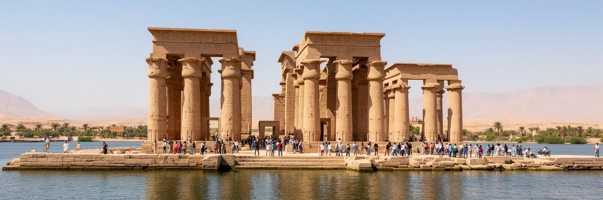
アスワン周辺の古代遺産は、石の重さと水の力を同時に語ります。フィラエ神殿はイシス信仰の重要な聖地として知られ、ダム建設による水位変化の中で移設保存されたのです。アブ・シンベル神殿を含むヌビア遺跡救済の国際事業は、文化財保護が一国の問題を超えて世界の協力になることを示しました。ですが救出された神殿を見るだけでは、物語は半分です。移された石の背後には、水没した村、移住した人びと、変わった岸辺、観光ルートの再編があります。フィラエへ向かう船、切符売り場、警備、ガイド、土産物店、周辺の道路は、古代宗教を現代の観光経済へ接続する装置でもあります。神殿は過去の聖地であり、現在の雇用の場でもあります。保存の成功は称賛されるべきですが、文化財を守るために何を移し、何を残し、誰の記憶が見えにくくなったのかを問う視点も必要です。アスワンでは、古代エジプトの壮麗さ、近代土木の巨大さ、国際保存運動、地域住民の移転が同じ水辺に重なります。だから神殿を訪れる経験は、神話や建築だけでなく、現代の水管理と社会変化を考える入口にもなります。石は移されたが、場所の意味は単純には移らありません。新しい島の上で神殿は美しく見える一方、かつての水辺の記憶は別の形で語り継がれるのです。観光の整った動線の外側に、保存と開発の選択が残した複雑さがあります。水辺で守られる遺産は、同時に移動した人びとの沈黙も映します。
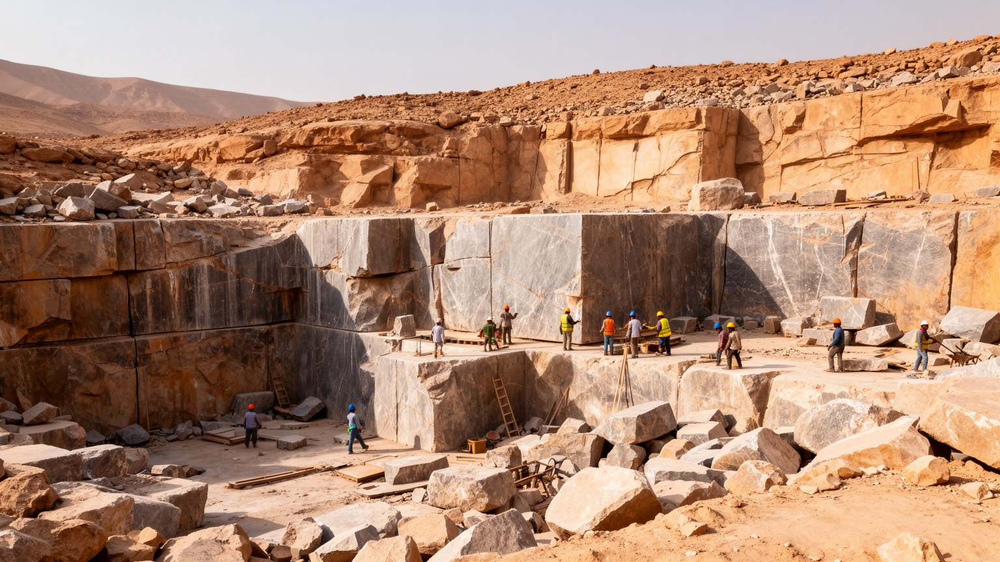
アスワンの採石場は、古代エジプトの建築技術を都市の地面から読ませる場所です。赤色や桃色の花崗岩は、オベリスク、神殿、彫像、記念建造物に使われ、ナイルを通じて下流へ運ばれたのです。未完成のオベリスクは、石を切り出す技術の壮大さと、ひび割れ一つで計画が止まる素材の厳しさを見せるのです。観光客には巨大な石の現場として印象的ですが、採石は古代の王権、労働組織、輸送、工学、職人の身体能力を結びつける産業でした。現代のアスワンでも、石材、建設、道路、修復、土産物のアラバスターや石工芸は都市経済の一部です。石は遺跡として眺めるだけでなく、働く素材として地域の手と技術を支えてきました。採石場を読むと、神殿やオベリスクが突然現れたものではなく、山を削り、道具を使い、川で運び、現場で立てる長い労働の連鎖だったことが分かります。アスワンの地質は、都市の景観だけでなく古代国家の物流網を形づくったのです。砂漠の乾いた岩肌は静かに見えますが、そこには権力、技能、失敗、危険、誇りが刻まれています。現代の保存や観光もまた、石をどう見せ、どう守り、どう働き手の収入へつなげるかに左右されます。採石場は古代技術の展示であると同時に、地域の産業史を語る開かれた教科書です。大きな石の沈黙の中に、無数の手作業と計算の時間が残っています。石を運ぶ発想は、川を使う都市の知恵とも結びついていたのです。
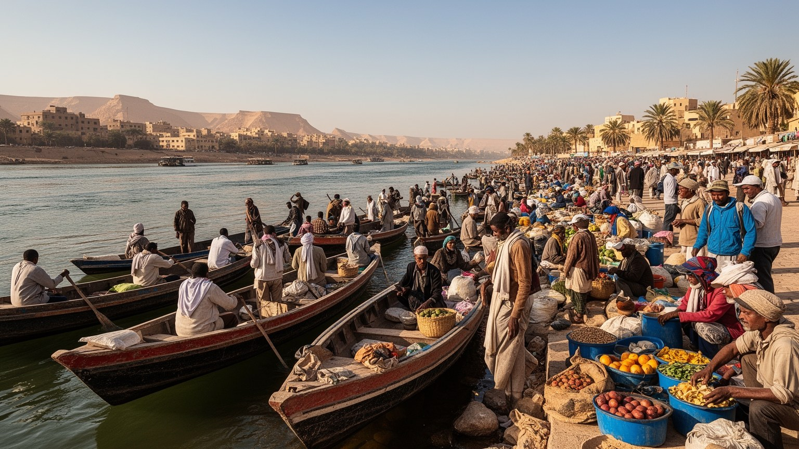
アスワンの観光は、ルクソールやカイロより穏やかな印象を持たれやすいですが、地域の家計にとっては重要で不安定な収入源です。ホテル、ナイルクルーズ、フェルーカ、モーターボート、ガイド、運転手、土産物店、レストラン、警備、清掃、遺跡管理、博物館、空港や駅のサービスが、旅人の動きを支えます。観光客の多い季節には仕事が増える一方、政治不安、感染症、航空便、為替、国際報道の変化で収入は急に落ちます。価格交渉やチップに依存する仕事では、客との距離感が生活の圧力として現れます。ヌビア文化を見せるツアー、神殿を巡る船、ダム見学、砂漠の小旅行は魅力的ですが、働く人にとっては燃料費、許可、競争、家族の支出、教育費が常に背後にあります。早朝から船を整える人、暑い中で待つ運転手、言語を学ぶ若者、店を守る家族の時間を読む必要があります。駅前やコルニッシュでは、飲み物、スカーフ、絵はがき、香辛料を売る小商いが観光と住民の流れを拾います。地域ラジオや旅行サイトの評判、サッカー大会や学校休暇も客足に影響します。夕方の店先ではテレビのニュースと試合中継が流れ、客待ちの時間が情報交換の場にもなります。料金の透明性、技能教育、地域文化への敬意、公正な取引がなければ、観光は人を疲れさせます。ナイルの夕景を楽しむ経験は、その背後の労働と分けられません。
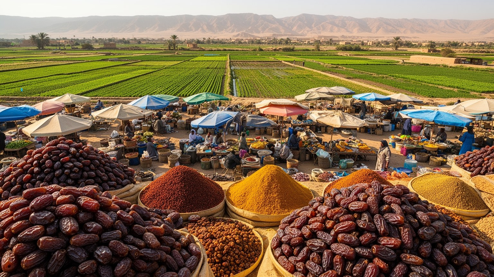
アスワンの周囲では、砂漠の中にナイル沿いの緑が細く続きます。農地は広大に見えるわけではありませんが、野菜、果物、穀物、飼料、家畜、ナツメヤシ、家庭の食材を支え、市場と観光施設へ食を届けます。水路の管理、ポンプ、肥料価格、土地の細分化、暑さ、輸送費は農家の収入を左右します。観光の仕事を持つ家族が畑も守ることがあり、農業と観光は別々の世界ではありません。市場では香辛料、豆、野菜、パン、日用品、土産物、衣類が並び、観光客向けの通りと住民の買い物の場所が近接します。ターメイヤ、フール、焼き魚、甘い茶、ナツメヤシの香りは、朝の買い物と川辺の食堂をつなぎます。露店の呼び声、秤の金属音、バスの警笛、乾いた土ぼこり、焼けた石の熱が、観光写真に写らない街の感覚を作ります。母親は学校帰りの子どもにパンを買い、高齢者はなじみの店で値段と近況を確かめ、若者は安い衣類や携帯用品を探します。店先のラジオはニュースと歌を流し、祭りや休暇の前には菓子、布、贈り物を選ぶ人で通りが混みます。買い物は家計管理であり、近所の信用を保つ場でもあります。価格の上昇は家計を直撃し、若者は農業より都市的な仕事を望むこともあります。ですが観光収入が揺れる時期、畑や親族の支えは生活の保険にもなります。市場の会話や価格交渉は、都市の経済状態を映す身近な指標です。
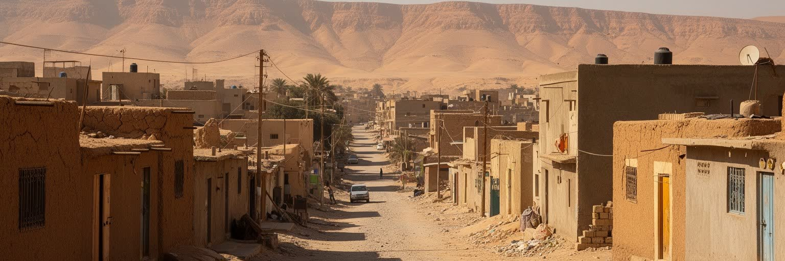
アスワンの暑さは、都市の時間と住宅の質を強く決めます。夏の日中は屋外での移動や労働が重くなり、観光も早朝や夕方へ寄せられます。船頭、警備員、建設作業員、市場の販売者、農作業をする人にとって、日陰、水分、休憩、通風は安全に直結します。住宅では厚い壁、屋上、窓の向き、日除け、風の通り道、エアコンの有無が生活の快適さを分けます。電気代を払える家庭とそうでない家庭の差は、便利さの差ではなく、健康リスクの差でもあります。子どもは夕方に路地や空き地でサッカーをし、高齢者は店先の椅子やモスク近くの日陰で涼を取り、女性たちは買い物の時間を熱の弱い時間へずらします。学校は試験期の暑さに気を配り、診療所では脱水や高血圧を抱える人の相談も増えます。川に近い地区は風と眺めを得やすいですが、土地や家賃の圧力もあります。周辺部へ広がる住宅地では、交通費、学校、病院、買い物、水道や排水の整備が課題になります。観光の表通りから少し離れると、未完成の建物、狭い路地、家族で増築する住まい、日陰を作る工夫が見えます。テレビや扇風機の音は薄い壁を越え、近所づきあいも暑さとともに濃くなります。夜になると屋上で洗濯物が揺れ、路地の椅子から茶の香りと会話が流れ、遠くの車と船の音が混じります。暑さへの対応は、アスワンの公平性を測る最も具体的な物差しになります。
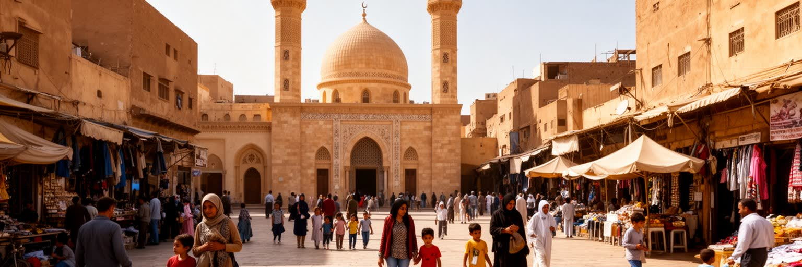
アスワンの宗教生活は、古代神殿の記憶と現代の祈りが近くにある点で独特です。フィラエ神殿や古代の遺跡はイシス信仰、王権、ナイルの神話を伝えますが、現在の街ではイスラムの礼拝、ラマダン、金曜の集まり、コプト教会の暦、家族の結婚式や葬送が日々の時間を動かします。モスクの声、断食明けの食事、市場の営業時間、親族訪問、祝日の交通は、宗教が都市のリズムを作ることを示しています。ヌビア人の家庭では、太鼓や手拍子の音楽、踊り、婚礼、言語、料理が信仰と家族関係に結びつき、観光向けの演出とは異なる生活の厚みを持ちます。ラマダンの夜には菓子、茶、屋台、親族訪問が遅くまで続き、普段の夜もカフェでサッカー中継を眺める男性、川辺を歩く家族、店先で近況を話す若者が街を満たします。学校の発表会、結婚式の楽団、地域の祭礼、墓参りは、世代を越えて顔を合わせる機会です。地元メディアやスマートフォンの動画は、祝祭の歌や家族の晴れ姿を市外の親族にも届けます。宗教を名所としてだけ見ると、住民がどのように互いを支え、悲しみや祝いを共有し、貧しい家庭を助けるかが見えにくいです。信仰は観光の仕事、学校の予定、結婚費用、葬儀の手配、親族の助け合いに関わります。夕方の祈り、祝日の市場、家族の集まりを見ると、古代の石と現代の暮らしが同じ川辺で時間を重ねていることが分かります。
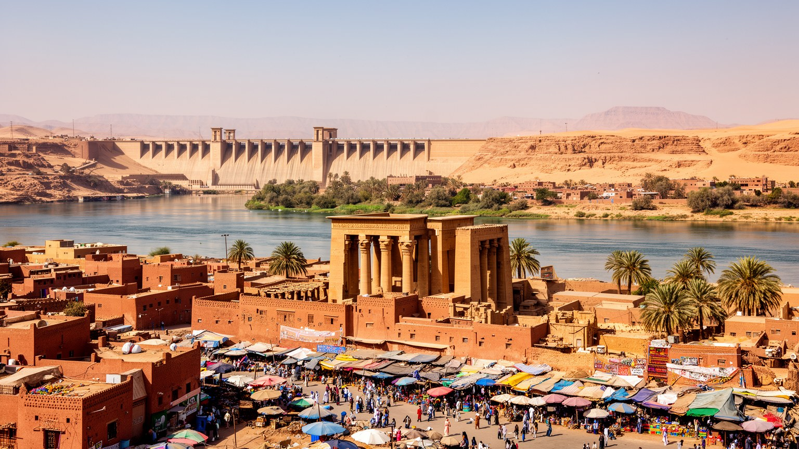
アスワンを読む難しさは、穏やかなナイルの風景が都市の複雑さを隠しやすい点にあります。夕暮れのフェルーカ、島の緑、フィラエ神殿、ヌビア村、ハイダムの眺めは強い魅力を持ちますが、その周囲には水管理、移転の記憶、観光労働、住宅の暑さ、農地の制約、国境感覚、若者の雇用があります。アスワンは大都市の規模では目立ちませんが、エジプト国家の水と電力を支え、古代遺産の国際保存を経験し、ヌビア文化の継承と喪失を抱えます。都市を点の名所で結ぶだけでは、川を渡る住民、ダムで働く人、暑い道で客を待つ運転手、市場で価格を交渉する家庭、島から学校へ通う子ども、病院へ付き添われる高齢者の時間が見えません。農業、採石、公共部門、親族の助け合い、宗教儀礼、移住の記憶に加え、サッカー、学校、地域メディア、夜のカフェ、食堂、露店が生活の輪郭を作ります。香辛料の匂い、川風、砂ぼこり、モスクの声、船外機の響き、テレビから流れる試合の歓声も都市を読む材料です。ここでは水辺の美しさと開発の負担、文化の誇りと喪失、旅の楽しさと不安定な収入が近くにあります。アスワンを深く理解するには、ナイルを背景ではなく都市の主役として扱い、石の遺産だけでなく人の移動と生活の条件を同じ地図に置く必要があります。水と石と人の移動を合わせると、街の輪郭はより鮮明になります。